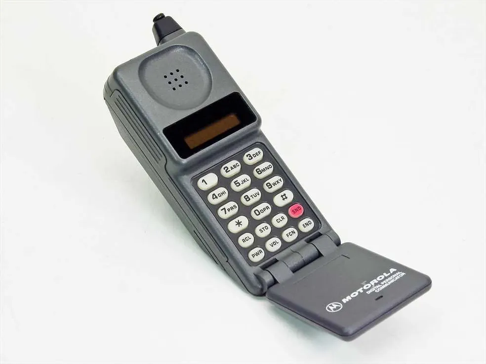

Meu primeiro post
Por: Ana Francez
Bem vindos ao meu novo Blog! Aqui vou mostrar algumas dicas de programação e curiosiedades da area de tecnologia
Vou compartilhar conhecimentos sobre tecnologia e programação
Por: Ana Francez
Bem vindos ao meu novo Blog! Aqui vou mostrar algumas dicas de programação e curiosiedades da area de tecnologia
Por: Ana Francez
o IBM 350, lançado em 1956, tinha cerca de 5 MB de capacidade e ocupava o espaço de um armário grande. Hoje, até uma foto de celular pode ter vários megabytes.

Por: Ana Francez
o Motorola DynaTAC 8000X chegou ao mercado em 1983. Pesava cerca de 1 kg, levava aproximadamente 10 horas para carregar e oferecia apenas cerca de 30 minutos de conversação.

Por: Ana Francez
uma das primeiras webcams famosas foi criada na Universidade de Cambridge para monitorar uma cafeteira. Os pesquisadores queriam saber se ainda havia café sem precisar ir até a máquina.